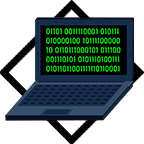

HTML
Начнем с разбора самых базов определений
HTML — стандартизированный язык гипертекстовой разметки документов для просмотра веб-страниц в браузере.
Тег — элемент языка разметки гипертекста. Есть парные и непарные. Парный тег без пары вызовет ошибку, но есть исключения в виде тегов которые могут быть как с парой, так и без, хотя настоятельно рекомендуется ставить пару.
Атрибуты HTML — это специальные слова, используемые внутри открывающего тега для управления поведением элемента.
Вобще тэги делятся на парные и непарные, рассмотрим часть из них
Парные:
Непарные:
Есть достаточно много других тегов которые комбинируются со стилями и все время дополняются, тут перечислена самая база которая поможет в старте изучения, после которой будет базовое понимание структуры веб-страницы.
HTML — стандартизированный язык гипертекстовой разметки документов для просмотра веб-страниц в браузере.
Тег — элемент языка разметки гипертекста. Есть парные и непарные. Парный тег без пары вызовет ошибку, но есть исключения в виде тегов которые могут быть как с парой, так и без, хотя настоятельно рекомендуется ставить пару.
Атрибуты HTML — это специальные слова, используемые внутри открывающего тега для управления поведением элемента.
Вобще тэги делятся на парные и непарные, рассмотрим часть из них
Парные:
<h1> - <h6> — HTML предлагает шесть заголовков разного уровня, которые показывают относительную важность секции, расположенной после заголовка. Так, тег <h1>
представляет собой наиболее важный заголовок первого уровня, а тег <h6> служит для обозначения заголовка шестого уровня и является наименее значительным.
<html> — Является контейнером, который заключает в себе все содержимое веб-страницы, включая теги <head> и <body>.
<head> — Предназначен для хранения других элементов, цель которых — помочь браузеру в работе с данными.
<body> — Предназначен для хранения содержания веб-страницы (контента), отображаемого в окне браузера.
<p> — Определяет текстовый абзац. Является блочным элементом, всегда начинается с новой строки, абзацы текста идущие друг за другом разделяются между собой отбивкой.
<sub> — Отображает шрифт в виде нижнего индекса.
<sup> — Отображает шрифт в виде верхнего индекса.
<html> — Является контейнером, который заключает в себе все содержимое веб-страницы, включая теги <head> и <body>.
<head> — Предназначен для хранения других элементов, цель которых — помочь браузеру в работе с данными.
<body> — Предназначен для хранения содержания веб-страницы (контента), отображаемого в окне браузера.
<p> — Определяет текстовый абзац. Является блочным элементом, всегда начинается с новой строки, абзацы текста идущие друг за другом разделяются между собой отбивкой.
<sub> — Отображает шрифт в виде нижнего индекса.
<sup> — Отображает шрифт в виде верхнего индекса.
Непарные:
<br> — Устанавливает перевод строки в том месте, где этот тег находится.
<hr> — Рисует горизонтальную линию.
<a> — Предназначен для создания ссылок. В зависимости от присутствия атрибутов name или href тег <a> устанавливает ссылку(href) или якорь(name). Якорем называется закладка внутри страницы, которую можно указать в качестве цели ссылки. При использовании ссылки, которая указывает на якорь, происходит переход к закладке внутри веб-страницы.
<hr> — Рисует горизонтальную линию.
<a> — Предназначен для создания ссылок. В зависимости от присутствия атрибутов name или href тег <a> устанавливает ссылку(href) или якорь(name). Якорем называется закладка внутри страницы, которую можно указать в качестве цели ссылки. При использовании ссылки, которая указывает на якорь, происходит переход к закладке внутри веб-страницы.
Есть достаточно много других тегов которые комбинируются со стилями и все время дополняются, тут перечислена самая база которая поможет в старте изучения, после которой будет базовое понимание структуры веб-страницы.
 vkontakte
vkontakte